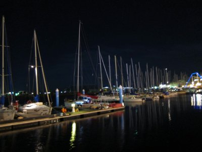
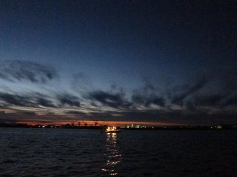
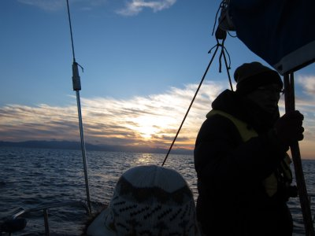
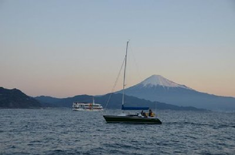

元旦クルーズ | 2013年1月 幹事：サムちゃん |
|---|---|
| 新年明けましておめでとうございます。 （って書いている今は既に10月ですが。月日が経つのは早いものです(^_^;） 今年もサムちゃんにお世話になり、初日の出を洋上で迎えるべく、1月1日6時に清水港を出港します。 | |
|  まだ暗いヨットハーバー |  お祝いムードの中、出航 |
| この明け切らない朝の暗さ好きですね。空が段々明るくなって「さあ、始めよう」って感じがします。しかも元旦ですから余計にですよね。 冬の朝6時ですよ。普段なら動いているモノも少ないでしょうが、元旦は皆がざわついている気がします。他のヨットも、今日だけの早朝クルーズをするフェリーも。 | |
|  東の空が明るくなり始める |  富士山が陽に染まり始める |
| 寒さが堪える朝一番。伊豆半島がの空がオレンジ色になってきて、富士山がオレンジに染まり初めます。今年は波が穏やかだ。 日の出の時間になっても、伊豆半島上空に雲があり、なかなかお日様が顔を出してくれません。 日の出時間10分過ぎた頃、やっと雲の隙間から今年初めてのお日様が・・・・・ 顔に当たる日の光が心地良いです。 今年も楽しい一年で有りますように。 | |
|  雲が掛かっているが初日の出 |  サムちゃんの友人から頂いた、その時のサムシング号 |
| コメント＆写真 べっしー | |